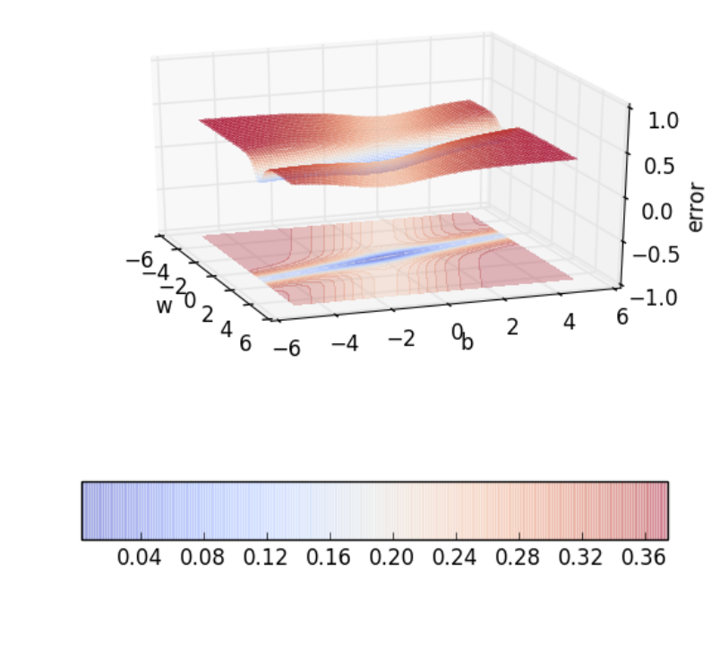
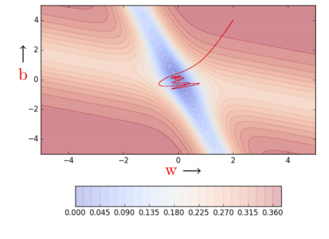
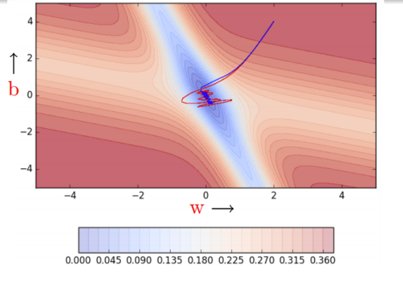
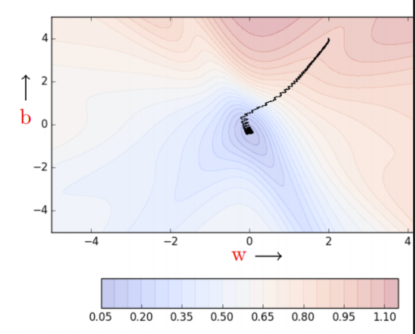
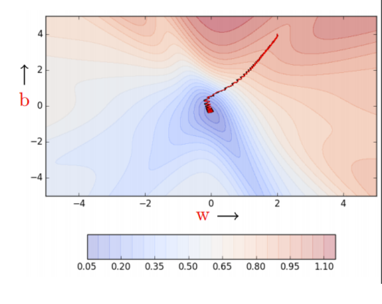
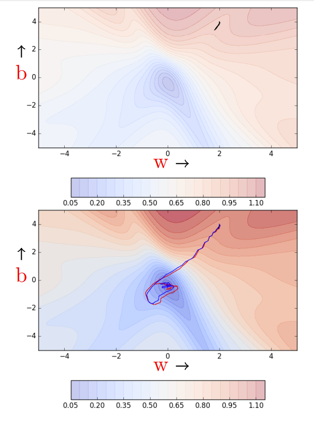
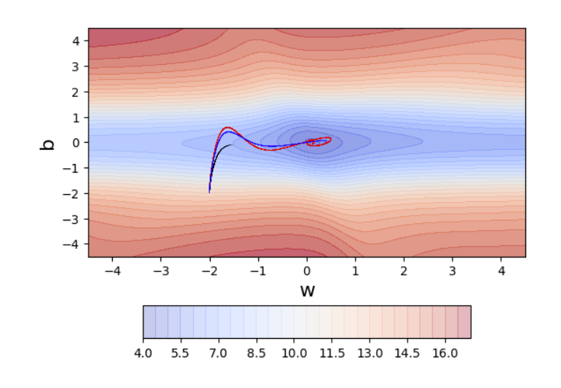
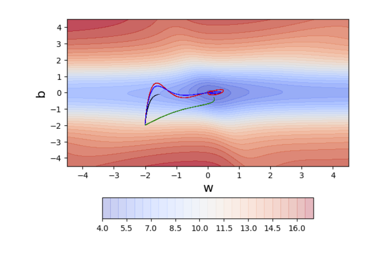
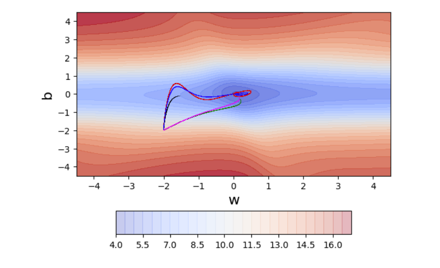

梯度下降变体¶
约 4520 个字 252 行代码 9 张图片 预计阅读时间 18 分钟
Reference¶
- https://www.cse.iitm.ac.in/~miteshk/CS7015/Slides/Handout/Lecture5.pdf
1 梯度下降¶
梯度下降规则是，我们要移动的方向 \(u\) 应该与梯度方向成 \(180^{\circ}\) ，也就是沿着与梯度相反的方向移动. 参数更新方程为 \(w_{t + 1}=w_{t}-\eta \nabla w_{t}\) ， \(b_{t + 1}=b_{t}-\eta \nabla b_{t}\) ，其中 \(\nabla w_{t}=\frac{\partial \mathscr{L}(w, b)}{\partial w}\big|_{w = w_{t}, b = b_{t}}\) ， \(\nabla b_{t}=\frac{\partial \mathscr{L}(w, b)}{\partial b}\big|_{w = w_{t}, b = b_{t}}\).
基于这个规则，我们创建如下算法： 算法1：梯度下降
- \(t \leftarrow 0\);
- \(\text{maxIterations} \leftarrow 1000\);
- \(\text{while } t < \text{maxIterations } \text{do}\)
- \(w_{t+1}\leftarrow w_{t}-\eta \nabla w_{t}\);
- \(b_{t+1}\leftarrow b_{t}-\eta \nabla b_{t}\)
- \(t \leftarrow t + 1\);
- \(\text{end}\)
下面是实现梯度下降的代码示例：
import numpy as np
X = np.array([0.5, 2.5])
Y = np.array([0.2, 0.9])
def f(w, b, x):
return 1.0 / (1.0 + np.exp(-(w * x + b)))
def error(w, b):
err = 0.0
for x, y in zip(X, Y):
fx = f(w, b, x)
err += 0.5 * (fx - y) ** 2
return err
def grad_b(w, b, x, y):
fx = f(w, b, x)
return (fx - y) * fx * (1 - fx)
def grad_w(w, b, x, y):
fx = f(w, b, x)
return (fx - y) * fx * (1 - fx) * x
def do_gradient_descent():
w, b, eta, max_epochs = -2, -2, 1.0, 100
for i in range(max_epochs):
dw, db = 0, 0
for x, y in zip(X, Y):
dw += grad_w(w, b, x, y)
db += grad_b(w, b, x, y)
w = w - eta * dw
b = b - eta * db
当曲线陡峭时，梯度 \((\frac{\Delta y_{1}}{\Delta x_{1}})\) 较大；当曲线平缓时，梯度 \((\frac{\Delta y_{2}}{\Delta x_{2}})\) 较小. 由于权重更新与梯度成正比（ \(w = w-\eta \nabla w\) ），所以在曲线平缓的区域，更新量较小；在曲线陡峭的区域，更新量较大.
无论从哪里开始，一旦遇到斜率平缓的曲面，进展就会变慢.
2 基于动量的梯度下降¶
关于梯度下降，我们发现它在遍历斜率平缓的区域时需要花费大量时间，因为这些区域的梯度非常小. 有没有更好的方法呢？有，我们来看看 “基于动量的梯度下降”. 其直观理解是，如果我反复被要求朝同一个方向移动，那么我可能应该更有信心，并开始在该方向上迈出更大的步伐，就像球在斜坡上滚动时获得动量一样.
基于动量的梯度下降的更新规则为 \(update _{t}=\gamma \cdot update _{t - 1}+\eta \nabla w_{t}\) ， \(w_{t + 1}=w_{t}- update _{t}\) . 除了当前的更新，还会考虑之前的更新历史. 具体计算过程如下：
\(update _{0}=0\)
\(update _{1}=\gamma \cdot update _{0}+\eta \nabla w_{1}=\eta \nabla w_{1}\)
\(update _{2}=\gamma \cdot update _{1}+\eta \nabla w_{2}=\gamma \cdot \eta \nabla w_{1}+\eta \nabla w_{2}\)
\(\begin{aligned} update _{3} & =\gamma \cdot update _{2}+\eta \nabla w_{3}=\gamma(\gamma \cdot \eta \nabla w_{1}+\eta \nabla w_{2})+\eta \nabla w_{3} \\ & =\gamma \cdot update _{2}+\eta \nabla w_{3}=\gamma^{2} \cdot \eta \nabla w_{1}+\gamma \cdot \eta \nabla w_{2}+\eta \nabla w_{3} \end{aligned}\)
\(update _{4}=\gamma \cdot update _{3}+\eta \nabla w_{4}=\gamma^{3} \cdot \eta \nabla w_{1}+\gamma^{2} \cdot \eta \nabla w_{2}+\gamma \cdot \eta \nabla w_{3}+\eta \nabla w_{4}\)
\(update _{t}=\gamma \cdot update _{t - 1}+\eta \nabla w_{t}=\gamma^{t - 1} \cdot \eta \nabla w_{1}+\gamma^{t - 2} \cdot \eta \nabla w_{1}+\cdots+\eta \nabla w_{t}\)
下面是实现基于动量的梯度下降的代码示例：
def do_momentum_gradient_descent():
w, b, eta = init_w, init_b, 1.0
prev_vw, prev_vb, gamma = 0, 0, 0.9
for i in range(max_epochs):
dw, db = 0, 0
for x, y in zip(X, Y):
dw += grad_w(w, b, x, y)
db += grad_b(w, b, x, y)
vw = gamma * prev_vw + eta * dw
vb = gamma * prev_vb + eta * db
w = w - vw
b = b - vb
prev_vw = vw
prev_vb = vb
基于动量的梯度下降在斜率平缓的区域也能迈出较大的步伐，因为动量会带动它前进. 但移动速度快并不总是好事，是否会出现动量使我们错过目标的情况呢？我们改变输入数据，得到不同的误差曲面，看看会发生什么.

在这种情况下，最小值山谷两侧的误差较高，动量是否会产生不利影响呢？基于动量的梯度下降会在最小值山谷内外振荡，因为动量会使它离开山谷. 在最终收敛之前，它需要进行多次折返. 尽管有这些折返，但它仍然比普通梯度下降收敛得更快. 经过100次迭代，基于动量的方法误差达到了0.00001，而普通梯度下降仍停留在0.36的误差.

3 Nesterov加速梯度下降¶
我们能否采取措施减少这些振荡呢？可以，我们来看看Nesterov加速梯度下降. 其直观理解是 “三思而后行”. 回顾之前的更新公式 \(update_{t} = \gamma \cdot update_{t - 1}+\eta \nabla w_{t}\) ，我们知道至少会移动 \(\gamma update_{t - 1}\) 的距离，然后再加上 \(\eta \nabla w_{t}\) . 为什么不直接在部分更新后的 \(w\) 值（ \(w_{look_ahead }=w_{t}-\gamma \cdot update _{t - 1}\) ）处计算梯度（ \(\nabla w_{look_ahead }\) ），而不是使用当前的 \(w_{t}\) 值呢？
NAG的更新规则为 \(w_{look_ahead }=w_{t}-\gamma \cdot update _{t - 1}\) ， \(update _{t}=\gamma \cdot update _{t - 1}+\eta \nabla w_{look_ahead }\) ， \(w_{t + 1}=w_{t}- update _{t}\) ，对于 \(b_{t}\) 也有类似的更新规则.
下面是实现Nesterov加速梯度下降的代码示例：
def do_nesterov_accelerated_gradient_descent():
w, b, eta = init_w, init_b, 1.0
prev_v_w, prev_v_b, gamma = 0, 0, 0.9
for i in range(max_epochs):
dw, db = 0, 0
# 进行部分更新
vw = gamma * prev_v_w
vb = gamma * prev_v_b
for x, y in zip(X, Y):
# 在部分更新后计算梯度
dw += grad_w(w - vw, b - vb, x, y)
db += grad_b(w - vw, b - vb, x, y)
# 进行完整更新
vw = gamma * prev_v_w + eta * dw
vb = gamma * prev_v_b + eta * db
w = w - vw
b = b - vb
prev_v_w = vw
prev_v_b = vb
NAG通过提前查看来更快地调整方向，因此它的振荡比基于动量的梯度下降更小，逃离最小值山谷的可能性也更小.

4 随机梯度下降和小批量梯度下降¶
让我们稍微偏离一下主题，谈谈这些算法的随机版本……
X = [0.5, 2.5]
Y = [0.2, 0.9]
def f(w, b, x): # 带参数w、b的sigmoid函数
return 1.0 / (1.0 + np.exp(-(w * x + b)))
def error(w, b):
err = 0.0
for x, y in zip(X, Y):
fx = f(w, b, x)
err += 0.5 * (fx - y) ** 2
return err
def grad_b(w, b, x, y):
fx = f(w, b, x)
return (fx - y) * fx * (1 - fx)
def grad_w(w, b, x, y):
fx = f(w, b, x)
return (fx - y) * fx * (1 - fx) * x
def do_gradient_descent():
w, b, eta, max_epochs = -2, -2, 1.0, 100
for i in range(max_epochs):
dw, db = 0, 0
for x, y in zip(X, Y):
dw += grad_w(w, b, x, y)
db += grad_b(w, b, x, y)
w = w - eta * dw
b = b - eta * db
缺点是什么呢？假设训练数据中有一百万个点. 为了对 \(w\) 和 \(b\) 进行一次更新，算法需要进行一百万次计算. 显然非常慢！！
我们能做得更好吗？可以，让我们看看随机梯度下降.
def do_stochastic_gradient_descent():
w, b, eta, max_epochs = -2, -2, 1.0, 1000
for i in range(max_epochs):
dw, db = 0, 0
for x, y in zip(X, Y):
dw = grad_w(w, b, x, y)
db = grad_b(w, b, x, y)
w = w - eta * dw
b = b - eta * db
缺点是什么呢？这是一个近似（实际上是随机）的梯度. 不能保证每一步都能降低损失. 让我们看看当数据点较少时这个算法的表现.
我们看到有很多振荡. 为什么呢？因为我们在做贪心决策. 每个点都试图将参数朝着对它最有利的方向推动（而没有考虑这会对其他点产生什么影响）. 对一个点局部有利的参数更新可能会损害其他点（就好像数据点之间在相互竞争）. 实际上，我们看到不能保证每个局部贪心的移动都会降低全局误差.

我们能通过改进随机梯度估计（目前每次只从一个数据点估计）来减少振荡吗？
def do_mini_batch_gradient_descent():
w, b, eta = -2, -2, 1.0
mini_batch_size, num_points_seen = 2, 0
for i in range(max_epochs):
dw, db, num_points = 0, 0, 0
for x, y in zip(X, Y):
dw += grad_w(w, b, x, y)
db += grad_b(w, b, x, y)
num_points_seen += 1
if num_points_seen % mini_batch_size == 0:
# 看到一个小批量数据
w = w - eta * dw
b = b - eta * db
dw, db = 0, 0 # 重置梯度

需要记住的一些事情……
1个epoch = 对整个数据进行一次遍历
1步 = 一次参数更新
\(N\) = 数据点的数量
\(B\) = 小批量大小
| 算法 | 1个epoch中的步数 |
|---|---|
| 普通（批量）梯度下降 | 1 |
| 随机梯度下降 | \(N\) |
| 小批量梯度下降 | \(B\) |
类似地，我们可以有基于动量的梯度下降和Nesterov加速梯度下降的随机版本.
def do_momentum_gradient_descent():
w, b, eta = initw, initb, 1.0
prev_vw, prev_vb, gamma = 0, 0, 0.9
for i in range(max_epochs):
dw, db = 0, 0
for x, y in zip(X, Y):
dw += gradw(w, b, x, y)
db += gradb(w, b, x, y)
vw = gamma * prev_vw + eta * dw
vb = gamma * prev_vb + eta * db
w = w - vw
b = b - vb
prev_vb = vb
prev_vw = vw
def do_stochastic_momentum_gradient_descent():
w, b, eta = init_w, init_b, 1.0
prev_vw, prev_v_b, gamma = 0, 0, 0.9
for i in range(max_epochs):
dw, db = 0, 0
for x, y in zip(X, Y):
dw = grad_w(w, b, x, y)
db = grad_b(w, b, x, y)
vw = gamma * prev_v_w + eta * dw
vb = gamma * prev_v_b + eta * db
w = w - vw
b = b - vb
prev_vw = vw
prev_v_b = vb
def do_nesterov_accelerated_gradient_descent():
w, b, eta = init_w, init_b, 1.0
prevvw, prevvb, gamma = 0, 0, 0.9
for i in range(max_epochs):
dw, db = 0, 0
# 进行部分更新
v_b = gamma * prev_v_b
v_w = gamma * prev_vw
for x, y in zip(X, Y):
# 在部分更新后计算梯度
dw += grad_w(w - v_w, b - v_b, x, y)
db += grad_b(w - v_w, b - v_b, x, y)
# 进行完整更新
v_w = gamma * prev_vw + eta * dw
v_b = gamma * prev_v_b + eta * db
w = w - v_w
b = b - v_b
prev_vw = v_w
prev_vb = v_b
def do_nesterov_accelerated_gradient_descent():
w, b, eta = init_w, init_b, 1.0
prev_vw, prev_v_b, gamma = 0, 0, 0.9
for i in range(max_epochs):
dw, db = 0, 0
for x, y in zip(X, Y):
# 进行部分更新
vw = gamma * prev_v_w
vb = gamma * prev_v_b
# 在部分更新后计算梯度
dw = grad_w(w - vw, b - vb, x, y)
db = grad_b(w - vw, b - vb, x, y)
vw = gamma * prev_vw + eta * dw
vb = gamma * prev_v_b + eta * db
w = w - vw
b = b - vb
prev_vw = vw
prev_v_b = vb
虽然动量梯度下降（红色）和NAG（蓝色）的随机版本都有振荡，但NAG相对于动量梯度下降的相对优势仍然存在（即NAG的折返相对较短）. 此外，它们都比随机梯度下降更快（60步后，随机梯度下降（黑色 - 上图）仍然有很高的误差，而NAG和动量梯度下降已接近收敛）.

5 调整学习率和动量的技巧¶
在介绍高级优化算法之前，让我们重新审视一下梯度下降中的学习率问题.
有人可能会说，我们可以通过设置较高的学习率来解决在平缓斜率区域的遍历问题（即通过将小梯度乘以一个较大的 \(\eta\) 来放大它）. 让我们看看如果将学习率设置为10会发生什么. 在斜率陡峭的区域，原本就很大的梯度会进一步放大. 如果有一个能根据梯度进行调整的学习率就好了……我们很快就会看到一些这样的算法.
初始学习率的技巧：调整学习率（在对数尺度上尝试不同的值：0.0001、0.001、0.01、0.1、1.0 ）. 用每个值运行几个epoch，找出效果最好的学习率. 现在在这个值附近进行更精细的搜索（例如，如果最佳学习率是0.1，那么现在尝试它附近的值：0.05、0.2、0.3 ）. 免责声明：这些只是启发式方法……没有绝对的最佳策略.
学习率退火的技巧： - 步长衰减：每5个epoch将学习率减半；或者如果验证误差大于上一个epoch结束时的误差，则在一个epoch后将学习率减半. - 指数衰减：\(\eta=\eta_{0}^{-k t}\) ，其中 \(\eta_{0}\) 和 \(k\) 是超参数，\(t\) 是步数. - \(1/t\)衰减：\(\eta=\frac{\eta_{0}}{1 + k t}\) ，其中 \(\eta_{0}\) 和 \(k\) 是超参数，\(t\) 是步数.
动量的技巧：Sutskever等人在2013年提出了以下动量调度： \(\(\gamma_{t}=\min \left(1 - 2^{-1-\log _{2}(\lfloor t / 250\rfloor + 1)}, \gamma_{max }\right)\)\) 其中，\(\gamma_{max }\) 从 \(\{0.999, 0.995, 0.99, 0.9, 0\}\) 中选取.
6 线搜索¶
在继续介绍其他算法之前，还有最后一点……
在实践中，常常会进行线搜索以找到相对更优的学习率 \(\eta\). 使用不同的 \(\eta\) 值来更新权重 \(w\)，然后保留能使损失最低的 \(w\) 更新值. 本质上，在每一步中，我们都试图从可选值里选取最佳的 \(\eta\). 其缺点是什么呢？每一步都要进行更多的计算. 在讨论二阶优化方法时，我们还会再提及这点.
def do_Line_search_gradient_descent():
w,b,etas=init_w,initb,[0.1,0.5,1.0,5.0,10.0]
for i in range(max_epochs):
dw,db=0,0
for x,y in zip(X,Y):
dw +=grad_w(w,b,x,y)
db +=grad_b(w,b,x,y)
min_error=10000 # 某个较大的值
bestw,best_b=w,b
for eta in etas:
tmpw=w-eta*dw
tmp_b=b-eta*db
if error(tmp_w,tmp_b)<min_error:
bestw=tmp_w
best_b=tmp_b
w,b= best_w, best_b
min_error=error(tmp_w,tmp_b)
让我们看看线搜索的实际效果. 它比普通梯度下降收敛得更快. 我们确实看到了一些振荡，但要注意这些振荡与动量法和NAG中的振荡不同.
7 自适应学习率的梯度下降¶
给定网络：
对于单个数据点 \((x, y)\)，很容易看出：
如果有 \(n\) 个点，我们可以将所有 \(n\) 个点的梯度相加得到总梯度.
如果特征 \(x^{2}\) 非常稀疏会怎样呢？（即对于大多数输入，其值为0 ）. 根据公式，\(\nabla w^{2}\) 对于大多数输入将为0，因此 \(w^{2}\) 得不到足够的更新. 如果 \(x^{2}\) 既稀疏又很重要，我们就需要更重视对 \(w^{2}\) 的更新. 能否为每个参数设置不同的学习率，以考虑特征的出现频率呢？
直观理解：根据参数的更新历史按比例衰减学习率（更新次数越多，衰减越多）. Adagrad的更新规则：
对于 \(b_{t}\) 也有类似的一组方程.
为了展示其效果，我们首先需要创建一些数据，使其中一个特征稀疏. 在我们的简单网络中该怎么做呢？花点时间思考一下. 我们的网络只有两个参数（\(w\) 和 \(b\)）. 其中，与\(b\)对应的输入/特征始终有效（所以实际上不能使其稀疏）.
def do_adagrad():
w,b,eta=initw,initb,0.1
vw,vb,eps=0,0,1e-8
for i in range(max_epochs):
dw,db=0,0
for x,y in zip(X,Y):
dw +=grad_w(w,b,x,y)
db +=grad_b(w,b,x,y)
vw=vw+dw**2
vb=vb+db**2
w=w-(eta/np.sqrt(v_w+eps))*dw
b=b-(eta/np.sqrt(v_b+eps))*db
唯一的选择是使 \(x\) 稀疏. 解决方案：我们创建100个随机的\((x, y)\)对，然后对于大约80%的这些对，将\(x\)设为0，从而使与\(w\)对应的特征稀疏.
普通梯度下降（黑色）、动量法（红色）和NAG（蓝色）在处理这个数据集时，这三种算法有一些有趣的表现. 你能发现吗？最初，这三种算法主要沿着垂直（\(b\)）轴移动，而沿水平（\(w\)）轴的移动非常少. 为什么呢？因为在我们的数据中，与 \(w\) 对应的特征稀疏，因此 \(w\) 很少更新……另一方面，\(b\) 非常密集，更新频繁. 这种稀疏性在包含数千个输入特征的大型神经网络中非常常见，因此我们需要解决这个问题.

Adagrad（绿色）通过使用特定于参数的学习率，确保即使存在稀疏性，\(w\)也能获得更高的学习率，从而有更大的更新. 此外，它还确保如果\(b\)更新频繁，由于分母不断增大，其有效学习率会降低. 在实践中，如果从分母中去掉平方根，效果就不太好（这值得思考一下）. 其缺点是什么呢？随着时间的推移，\(b\)的有效学习率会衰减到不再有进一步更新的程度. 我们能避免这种情况吗？

直观理解：Adagrad对学习率的衰减非常激进（随着分母增大）. 结果，过一段时间后，频繁更新的参数由于学习率衰减，得到的更新会非常小. 为了避免这种情况，为什么不衰减分母，防止其快速增长呢？ RMSProp的更新规则：
对于 \(b_{t}\) 也有类似的一组方程.
def do_rmsprop():
w,b,eta=initw,initb,0.1
V_w,b_updates,eps,betal=0,0,1e-8,0.9
for i in range(max_epochs):
dw,db=0,0
for x,y in zip(X,Y):
dw +=grad_w(w,b,x,y)
db +=grad_b(w,b,x,y)
Vw=betal
w=w-(eta/np.sqrt(v_w+eps)*dw
b=b-(eta/np.sqrt(vb+eps))*db
Adagrad在接近收敛时会陷入停滞（由于学习率衰减，它不再能在垂直（\(b\)）方向上移动）. RMSProp通过对衰减的控制不那么激进，克服了这个问题.

直观理解：RMSProp解决Adagrad衰减问题的所有方法，再加上使用梯度的累积历史. 在实践中，\(\beta_{1}=0.9\) ，\(\beta_{2}=0.999\) . Adam的更新规则：
对于\(b_{t}\)也有类似的一组方程.
def do_adam():
w_history,b_history,error_history=[(init_w,init_b,0,0)],[],[],[]
w,b,eta,mini_batch_size,num_points_seen=init_w,initb,0.1,10,0
mw,mb,vw,vb,mwhat,mbhat,vwhat,vbhat,eps,betal,beta2=0,0,0,0,0,0,0,1e-8,0.9,0.999
for i in range(max_epochs):
dw,db=0,0
for x,y in zip(X,Y):
dw +=grad_w(w,b,x,y)
db +=grad_b(w,b,x,y)
mw=betal*m_w+(1-betal)*dw
mb=betal*mb+(1-betal)*db
vw=beta2*vw+(1-beta2)*dw**2
vb=beta2*vb+(1-beta2)*db**2
mwhat=m_w/(1-math.pow(betal,i+1))
mbhat=m_b/(1-math.pow(betal,i+1))
vwhat=vw/(1-math.pow(beta2,i+1))
vbhat=vb/(1-math.pow(beta2,i+1))
w=w-(eta/np.sqrt(v_w_hat+eps))*mwhat
b=b-(eta/np.sqrt(v_b_hat+eps))*mbhat
价值百万美元的问题：在实践中应该使用哪种算法？目前，Adam似乎或多或少是默认的选择（\(\beta_{1}=0.9\) ，\(\beta_{2}=0.999\) ，\(\epsilon=1e - 8\) ）. 尽管它应该对初始学习率具有鲁棒性，但我们观察到对于序列生成问题，\(\eta=0.001\) 、\(0.0001\)效果最佳. 话虽如此，许多论文报告称，带有动量的随机梯度下降（Nesterov或经典版本）以及简单的退火学习率调度在实践中也表现良好（通常，对于序列生成问题，初始学习率为\(\eta=0.001\) 、\(0.0001\) ）. 总体而言，Adam可能是最佳选择！！最近的一些研究表明，Adam存在问题，在某些情况下可能不会收敛.
Adam中需要偏差修正的原因解释¶
Adam的更新规则：
注意，我们将 \(m_{t}\) 作为梯度的移动平均值. 这样做的原因是我们不想过于依赖当前梯度，而是依赖于梯度在多个时间步上的整体表现. 一种理解方式是，我们关注的是梯度的期望值，而不是在时间\(t\)计算的单个点估计值. 然而，我们计算的是\(m_{t}\)作为指数移动平均值，而不是计算 \(E[\nabla w_{t}]\) . 理想情况下，我们希望 \(E[m_{t}]\) 等于 \(E[\nabla w_{t}]\) . 让我们看看是否如此.
为了方便，我们将 \(\nabla w_{t}\) 表示为 \(g_{t}\) ，将 \(\beta_{1}\) 表示为 \(\beta\) .
一般来说，
因此，\(m_{t}=(1-\beta) \sum_{i=1}^{t} \beta^{t - i} g_{i}\) . 对两边取期望：
假设：所有\(g_{i}\)都来自相同的分布，即对于所有\(i\) ，\(E[g_{i}]=E[g]\) .
最后一个分数是公比为\(\beta\)的等比数列的和. $$ E\left[m_{t}\right]=E[g]\left(1-\beta^{t}\right) $$
因此，我们进行偏差修正，因为这样 \(\hat{m}_{t}\) 的期望值与 \(g_{t}\) 的期望值相同.